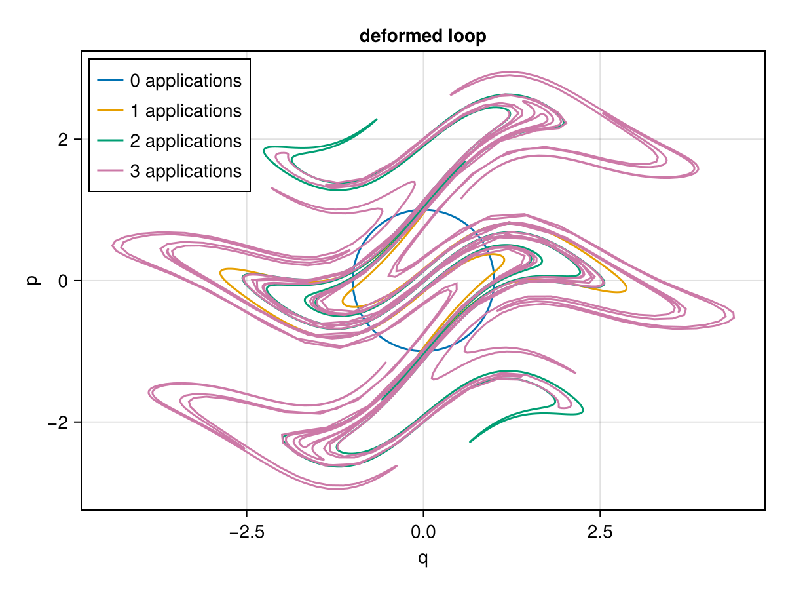
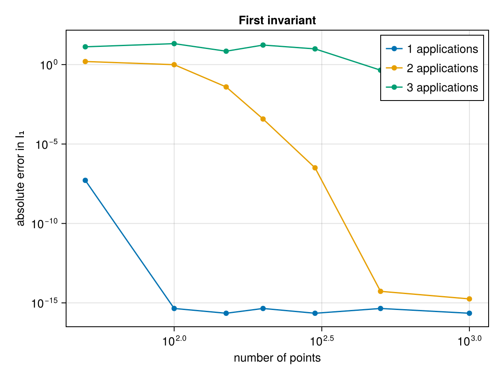
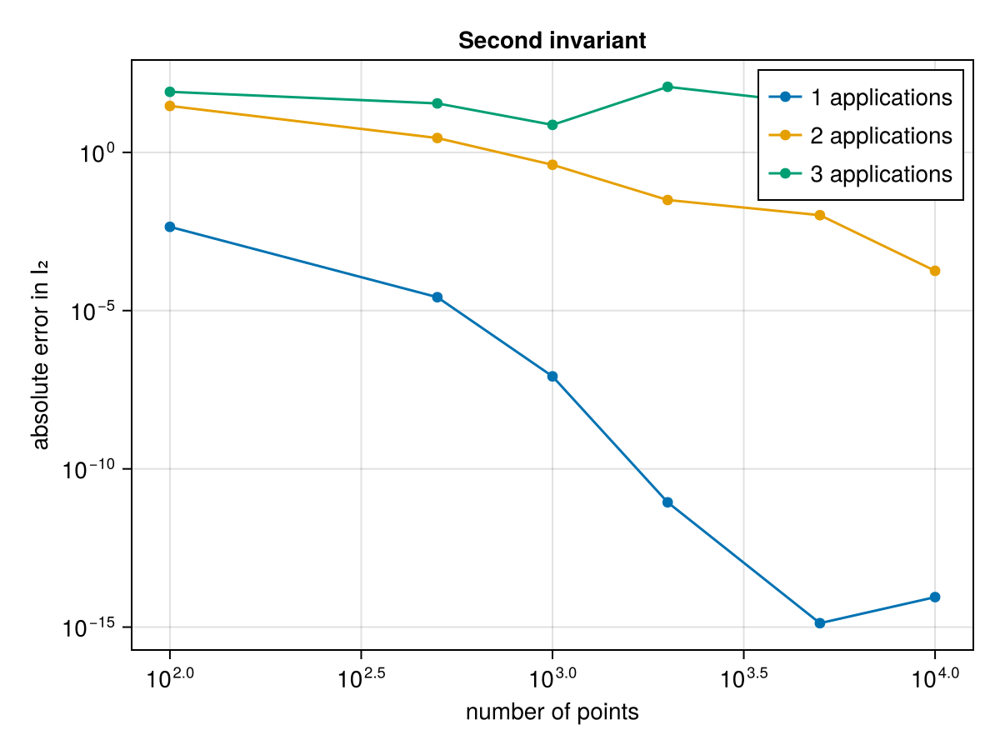

Convergence
The previous guides move a curve or surface along the flow of a dynamical system. Here we instead study the accuracy of the invariant computation itself: how well are the first and second Poincaré invariants approximated as we increase the number of sample points, and how does this hold up when the curve or surface is severely deformed?
To that end we apply an analytic area-preserving ("symplectic") map repeatedly to an initial curve and surface. Because the map preserves area, it preserves both Poincaré invariants exactly, so any deviation of the computed value is purely a discretisation error.
using PoincareInvariants
using CairoMakie
# an area-preserving map: two shears followed by a 90° rotation
function wavy(x, y)
y = y + 2 * sinpi(x)
x = x - y * exp(-y^2 / 4)
return -y, x
end
# apply the map n times
wavy(x, y, n) = n == 0 ? (x, y) : wavy(wavy(x, y)..., n - 1)
# initial unit circle (first invariant I₁ = π) and 2×2 square (second invariant I₂ = 4)
loopmap(θ, n) = wavy(cospi(2θ), -sinpi(2θ), n)
surfmap(x, y, n) = wavy(2x - 1, 2y - 1, n)
# error clamped to machine epsilon so it can be shown on a logarithmic axis
calcerr(I, I0) = max(abs(I - I0), eps())Deformation
Applying the map repeatedly winds the initial unit circle into an increasingly intricate curve:
θs = range(0, 1; length = 2000)
fig = Figure()
ax = Axis(fig[1, 1]; xlabel = "q", ylabel = "p", aspect = DataAspect(), title = "deformed loop")
for n in 0:3
pts = [loopmap(θ, n) for θ in θs]
lines!(ax, first.(pts), last.(pts); label = "$n applications")
end
axislegend(ax; position = :lt)
fig
First invariant
We compute the first invariant $I_1 = \oint_\gamma p \, dq = \pi$ on the deformed loop for a range of point numbers. The FirstFourierPlan converges spectrally, reaching machine precision even for the strongly deformed curves once enough points are used.
Ns = [50, 100, 150, 200, 300, 500, 1000]
fig = Figure()
ax = Axis(fig[1, 1]; xscale = log10, yscale = log10,
xlabel = "number of points", ylabel = "absolute error in I₁", title = "First invariant")
for n in 1:3
errs = map(Ns) do N
pinv = CanonicalFirstPI{Float64, 2}(N)
calcerr(compute!(pinv, getpoints(θ -> loopmap(θ, n), pinv)), π)
end
scatterlines!(ax, Ns, errs; label = "$n applications")
end
axislegend(ax; position = :rt)
fig
Second invariant
The second invariant $I_2 = \int_S dq \wedge dp = 4$ is computed with the Chebyshev/Padua representation of the surface. The two-dimensional surface is harder to resolve than the one-dimensional curve, so more points are needed, but the error still decreases rapidly with the number of points.
Ns = [100, 500, 1000, 2000, 5000, 10000]
fig = Figure()
ax = Axis(fig[1, 1]; xscale = log10, yscale = log10,
xlabel = "number of points", ylabel = "absolute error in I₂", title = "Second invariant")
for n in 1:3
errs = map(Ns) do N
pinv = CanonicalSecondPI{Float64, 2}(N)
calcerr(compute!(pinv, getpoints((x, y) -> surfmap(x, y, n), pinv)), 4.0)
end
scatterlines!(ax, Ns, errs; label = "$n applications")
end
axislegend(ax; position = :rt)
fig
Even under severe deformation the spectral representations used by FirstFourierPlan and SecondChebyshevPlan (see Using Different Integral Implementations) recover the invariants to high accuracy, which is what makes them suitable for tracking invariants along the flow of a dynamical system.